import numpy as np
import pandas as pd
import matplotlib.pyplot as plt
from statsmodels.tsa.arima.model import ARIMA
from statsmodels.tsa.stattools import adfuller
from statsmodels.graphics.tsaplots import plot_acf, plot_pacf
from statsmodels.stats.diagnostic import acorr_ljungbox
plt.rcParams["figure.figsize"] = (11, 4)
plt.rcParams["axes.grid"] = True
plt.rcParams["grid.alpha"] = 0.3
np.random.seed(42)14 AR-MA · Laboratorio · La Ventosa, Oaxaca
Estadística, Detección de Anomalías e Imputación de Series Temporales Posgrado en Ingeniería · Área Energía · IER-UNAM
Documento autocontenido: el Bloque 1 fija conceptos y el Bloque 2 ejecuta el laboratorio completo (45 min).
14.1 Setup
15 Bloque 1 · Flujo de trabajo y conceptos clave
Antes de tocar datos, fijamos: (i) qué son los modelos AR/MA/ARMA y de dónde salen \(p\) y \(q\), (ii) el ciclo Box-Jenkins, (iii) las cuatro herramientas estadísticas que usaremos toda la sesión (ADF, ACF, PACF, Ljung-Box).
15.1 ARMA en una línea — qué son \(p\) y \(q\)
Trabajamos con tres modelos lineales sobre series estacionarias:
AR(p) — autoregresivo de orden \(p\). El valor actual es combinación lineal de los \(p\) valores pasados observados más un choque blanco:
\[y_t \;=\; c + \phi_1\, y_{t-1} + \phi_2\, y_{t-2} + \cdots + \phi_p\, y_{t-p} + \varepsilon_t, \qquad \varepsilon_t \sim \text{i.i.d.}\,\mathcal{N}(0, \sigma^2).\]
Intuición física: inercia. La serie recuerda sus propios valores recientes.
MA(q) — media móvil de orden \(q\). El valor actual es combinación lineal de los \(q\) choques pasados más el choque actual:
\[y_t \;=\; \mu + \varepsilon_t + \theta_1\, \varepsilon_{t-1} + \theta_2\, \varepsilon_{t-2} + \cdots + \theta_q\, \varepsilon_{t-q}.\]
Intuición física: eco de choques. La serie reverbera durante \(q\) pasos cada perturbación, luego olvida.
ARMA(p, q) — la combinación. Inercia y eco a la vez:
\[y_t \;=\; c + \sum_{i=1}^{p} \phi_i\, y_{t-i} \;+\; \varepsilon_t + \sum_{j=1}^{q} \theta_j\, \varepsilon_{t-j}.\]
De ahí salen \(p\) y \(q\):
- \(p\) = cuántos rezagos del pasado observado entran al modelo.
- \(q\) = cuántos rezagos de innovaciones (\(\varepsilon\)) entran al modelo.
- Las \(\varepsilon_t\) son ruido blanco: media cero, varianza constante, no correlacionadas.
Todo el trabajo del laboratorio es: dada una serie, decidir \((p, q)\) y validar que los residuales del modelo ajustado sean indistinguibles de ese ruido blanco.
15.2 Qué es un “choque blanco” \(\varepsilon_t\)
Un choque blanco (o ruido blanco) es una secuencia de perturbaciones \(\varepsilon_t\) con tres propiedades:
- Media cero: \(E[\varepsilon_t] = 0\). En promedio no empuja la serie hacia arriba ni hacia abajo.
- Varianza constante: \(\text{Var}(\varepsilon_t) = \sigma^2\) (homocedasticidad). Todos los choques tienen la misma “talla típica”.
- Sin memoria: \(\text{Cov}(\varepsilon_t, \varepsilon_s) = 0\) si \(t \neq s\). Saber el choque de ayer no dice nada del choque de hoy.
Es la versión matemática de sorpresa pura: información nueva, independiente, sin estructura predecible.
15.2.1 Ejemplos físicos — para el viento de La Ventosa
- Una nube convectiva pasa y reduce momentáneamente la insolación → cae el contraste térmico Golfo–Pacífico → el viento baja un escalón impredecible.
- Un eddy turbulento se desprende de un cerro cercano → ráfaga que no tiene memoria del minuto anterior.
- Una perturbación sinóptica débil en altura que el modelo de mesoescala no capturó y se siente como un pequeño “empujón” sobre la velocidad medida.
- Error de medición del anemómetro (cuantización, vibraciones del mástil). En la práctica este “choque” se mezcla con los anteriores y es indistinguible.
15.2.2 Ejemplos en otros contextos — para ver que es universal
| Sistema | Choque típico \(\varepsilon_t\) |
|---|---|
| Precio de una acción | Tweet inesperado, decisión de la Fed, terremoto en Tokio |
| Demanda eléctrica | Partido de fútbol no programado, ola de calor súbita |
| Tráfico vehicular | Accidente puntual, semáforo que falla |
| Temperatura ambiente | Apertura de una ventana, nube tapando el sol |
| Señal de radio | Interferencia electromagnética aleatoria |
| Población de una especie | Brote epidémico, evento de mortalidad masiva, migración fortuita |
El patrón común: eventos individualmente impredecibles, sin estructura temporal entre ellos, que en conjunto generan la variabilidad “irreducible” del sistema.
Lo que NO es ruido blanco. - El ciclo diario del viento: es predecible (sale a la misma hora todos los días). - Una racha multi-día asociada a un frente frío: tiene memoria (hoy se parece a ayer). - Tendencia de calentamiento: empuja sistemáticamente en una dirección.
Todo eso debe estar capturado por el modelo (climatología, AR, MA, tendencia explícita); lo que sobra son los \(\varepsilon_t\).
15.2.3 El choque en AR vs MA — mismo \(\varepsilon_t\), distinto mecanismo de transmisión
El choque blanco es matemáticamente el mismo en ambos modelos. Lo que cambia es cómo el sistema físico lo propaga en el tiempo.
En AR — el choque se inyecta en el estado, que tiene inercia.
El valor actual depende de los valores pasados observables. Cuando llega un choque, modifica el estado, y de ahí la dinámica propia (los \(\phi_i\)) lo arrastra y lo olvida geométricamente como \(\phi^k\).
- Analogía: habitación climatizada. Abrir una ventana = \(\varepsilon_t\). La temperatura no se recupera al instante porque la pared y el aire tienen capacidad térmica; el ajuste tiene escala de tiempo \(\sim 1/(1-\phi)\).
- La Ventosa: una célula convectiva reduce el contraste térmico Golfo–Pacífico. El flujo sinóptico no cambia abruptamente porque tiene momentum atmosférico — baja un escalón y se recupera con la escala de tiempo del régimen.
En MA — el choque tiene vida útil propia, el sistema no lo propaga.
No hay estado interno que arrastre la perturbación; lo que persiste son los choques mismos durante \(q\) pasos y luego se acaban. Es la respuesta de un filtro de impulso finito (FIR).
- Analogía: sala con reverberación de \(q\) segundos. Un golpe se escucha durante \(q\) pasos y desaparece sin dejar al sistema modificado.
- La Ventosa: los efectos MA suelen representar la inercia del anemómetro o el suavizado del muestreo horario (un evento sub-horario “ringa” en los datos sin alterar el flujo medio), eddies turbulentos de vida corta, o errores de proceso correlacionados (e.g., una nube mal interpolada por el reanálisis durante 2–3 h).
| Aspecto | AR — choque vive en el estado | MA — choque vive en memoria de choques |
|---|---|---|
| Mecanismo físico | Sistema con inercia / capacitancia interna | Sin estado propio; eco finito |
| Duración del efecto | Infinita pero decreciente como \(\phi^k\) | Exactamente \(q\) pasos |
| Ejemplo cotidiano | Termostato, péndulo amortiguado, RLC | Sala reverberante, filtro FIR digital |
| En viento | Inercia sinóptica del flujo | Errores de medida, eddies cortos, suavizado |
Síntesis. AR describe un sistema con dinámica intrínseca (ecuación diferencial / capacidad de almacenar energía). MA describe un sistema sin dinámica propia que filtra ruido reciente. ARMA admite que en la naturaleza casi nada es puro — coexisten inercia del sistema y eco de las perturbaciones recientes.
15.2.4 Por qué importa para ARMA
ARMA modela inercia (AR) y eco de choques (MA), pero el motor que mueve todo es la cadena \(\{\varepsilon_t\}\). Si los choques tuvieran memoria (no fueran blancos), quedaría estructura que el modelo no capturó.
Por eso el chequeo final de Box-Jenkins —Ljung-Box sobre los residuales— verifica que los \(\hat{\varepsilon}_t = y_t - \hat{y}_t\) se parezcan a ruido blanco. Son la mejor evidencia empírica que tenemos sobre los \(\varepsilon_t\) reales del sistema.
15.2.5 De dónde sale cada cosa — no confundir orden con coeficientes
ACF y PACF eligen la arquitectura del modelo (cuántos parámetros); los valores numéricos de \(\phi_i, \theta_j\) los pone el optimizador después.
| Cosa | De dónde sale | Qué responde |
|---|---|---|
| \(p,\, q\) | Inspección visual de ACF/PACF (dónde cortan o decaen) | ¿Cuántos parámetros? |
| \(\phi_i,\, \theta_j\) | Estimación por máxima verosimilitud dentro de ARIMA(...).fit() |
¿Qué valor toma cada uno? |
| \(\varepsilon_t\) | Residuales del modelo ajustado: \(\hat{\varepsilon}_t = y_t - \hat{y}_t\) | ¿Qué quedó sin explicar? |
El flujo es: ACF/PACF → eliges \((p, q)\) → ARIMA(serie, order=(p,0,q)).fit() busca los \(\phi_i, \theta_j\) que maximizan la verosimilitud → calculas residuales → Ljung-Box dictamina si son blancos.
Caso especial. Para un AR(p) puro hay una igualdad exacta: \(\text{PACF}(p) = \phi_p\) (el último coeficiente). Por eso PACF “corta” justo en \(p\). Pero \(\phi_1, \dots, \phi_{p-1}\) no son los valores de PACF en esos lags — son combinaciones no triviales que resuelve la estimación.
15.3 El ciclo Box-Jenkins
Cuatro pasos, en loop:
- Identificar. ¿La serie es estacionaria? ¿Qué orden \((p, q)\) probar? Herramientas: ADF + ACF + PACF.
- Estimar. Ajustar
ARIMA(p, d, q)por máxima verosimilitud. - Diagnosticar. ¿Los residuales son ruido blanco? Herramienta: ACF residual + Ljung-Box.
- Decidir. Si los residuales NO son blancos → subir orden y volver a 2. Si lo son → parar y pronosticar.
Tip · cómo leer \((p, q)\) del par ACF/PACF. - PACF corta en lag \(p\) y ACF decae → empezar con AR(\(p\)). - ACF corta en lag \(q\) y PACF decae → empezar con MA(\(q\)). - Ambas decaen → mezcla ARMA; típicamente \((p, q) = (1, 1)\) es buen primer disparo. - “Cortar” = el primer lag claramente dentro de la banda \(\pm 1.96/\sqrt{n}\). - En la práctica, lee los picos significativos como cota superior del orden y empieza bajo (humilde); subir es barato, sobreajustar duele en el diagnóstico.
Lección. La identificación visual (ACF/PACF) da un punto de partida, no una respuesta única. La prueba final del modelo es Ljung-Box sobre los residuales.
15.4 Raíz unitaria — el concepto que prueba el ADF
Considera un AR(1): \(y_t = \phi\, y_{t-1} + \varepsilon_t\). El comportamiento depende completamente del valor de \(\phi\):
| \(\phi\) | Comportamiento | Nombre |
|---|---|---|
| \(\lvert\phi\rvert < 1\) | Estacionario, revierte a la media | Estable |
| \(\phi = 1\) | Paseo aleatorio, sin reversión | Raíz unitaria |
| \(\lvert\phi\rvert > 1\) | Explosivo, varianza diverge | No estacionario |
El nombre viene del polinomio característico del AR(p): \(1 - \phi_1 z - \cdots - \phi_p z^p = 0\). Si una raíz vale exactamente \(z = 1\) → “raíz unitaria”.
Fórmula general. Para un AR(p), la condición de estacionariedad se lee del polinomio característico:
\[\phi(z) \;=\; 1 - \phi_1\, z - \phi_2\, z^2 - \cdots - \phi_p\, z^p \;=\; 0.\]
- Todas las raíces \(\lvert z_i \rvert > 1\) → estacionario.
- Alguna \(\lvert z_i \rvert = 1\) → raíz unitaria (no estacionario).
- Alguna \(\lvert z_i \rvert < 1\) → explosivo.
Ejemplo con valores — AR(2) con raíz unitaria. Considera
\[y_t \;=\; 1.5\, y_{t-1} \;-\; 0.5\, y_{t-2} \;+\; \varepsilon_t.\]
Aquí \(\phi_1 = 1.5\) y \(\phi_2 = -0.5\), así que el polinomio queda
\[1 - 1.5\, z + 0.5\, z^2 \;=\; 0.\]
Despeje. Factorizamos directamente (o aplicamos la fórmula cuadrática):
\[1 - 1.5\, z + 0.5\, z^2 \;=\; (1 - z)\,(1 - 0.5\, z).\]
Las raíces son entonces
\[z_1 = 1 \quad (\text{raíz unitaria}), \qquad z_2 = 2.\]
La presencia de \(z_1 = 1\) confirma que el proceso no es estacionario. De hecho, si tomamos la primera diferencia \(\Delta y_t = y_t - y_{t-1}\), el resultado sí lo es:
\[\Delta y_t \;=\; 0.5\, \Delta y_{t-1} \;+\; \varepsilon_t,\]
un AR(1) estable (la otra raíz, \(z_2 = 2\), sobrevive). El AR(2) original equivale a un ARIMA(1, 1, 0) sobre la serie cruda — el “1” central es justamente el orden de diferenciación necesario para eliminar la raíz unitaria.
Conexión con el ADF. El ADF prueba exactamente esto: si el AR ajustado a tus datos tiene una raíz en \(z = 1\). Cuando rechaza \(H_0\), no hace falta diferenciar. Cuando no rechaza, conviene aplicar \(\Delta\) y reintentar sobre la diferencia.
15.4.1 Por qué \(\phi = 1\) rompe todo
Si \(y_t = y_{t-1} + \varepsilon_t\), resolviendo recursivamente desde \(y_0\):
\[y_t = y_0 + \sum_{i=1}^{t} \varepsilon_i.\]
- Varianza explota: \(\text{Var}(y_t) = t\sigma^2\) → crece linealmente.
- Choques permanentes: cada \(\varepsilon_i\) se queda en el nivel para siempre (entra con coeficiente 1 en la suma).
- No hay media a la cual revertir: \(E[y_t \mid y_0] = y_0\), depende de dónde arrancaste.
Si \(|\phi| < 1\), en cambio, los choques decaen como \(\phi^k\) → la serie olvida el pasado y oscila alrededor de una media fija.
15.4.2 Truco algebraico — lo que hace el ADF por dentro
Resta \(y_{t-1}\) en ambos lados de \(y_t = \phi\, y_{t-1} + \varepsilon_t\):
\[\Delta y_t = (\phi - 1)\, y_{t-1} + \varepsilon_t = \gamma\, y_{t-1} + \varepsilon_t, \qquad \gamma \equiv \phi - 1.\]
Entonces:
- \(\phi = 1 \iff \gamma = 0\) → raíz unitaria.
- \(\phi < 1 \iff \gamma < 0\) → estacionaria.
El ADF estima \(\gamma\) por MCO y prueba \(H_0: \gamma = 0\). Por eso la hipótesis nula es “hay raíz unitaria” — el caso \(\gamma = 0\) es la frontera.
Ejemplos físicos. - Con raíz unitaria: precio de una acción (cada noticia se incorpora al nivel permanentemente), nivel del mar acumulado, posición de una partícula browniana. - Sin raíz unitaria: temperatura diaria de una ciudad (revierte a climatología), velocidad del viento en escala sinóptica, oscilaciones cerca de un equilibrio.
En La Ventosa esperamos no raíz unitaria — el viento no diverge, fluctúa en un rango acotado por la física. El ADF lo confirmará con \(p \approx 0\).
15.5 ADF — ¿la serie es estacionaria?
Augmented Dickey-Fuller. Versión aumentada del truco anterior: añade intercepto, tendencia y \(k\) rezagos de \(\Delta y_t\) para manejar series reales. Se ajusta
\[\Delta y_t \;=\; \alpha + \beta\, t + \gamma\, y_{t-1} + \sum_{i=1}^{k} \delta_i\, \Delta y_{t-i} + \varepsilon_t,\]
y se contrasta el coeficiente \(\gamma\) con el estadístico \(\hat{\gamma}/\text{SE}(\hat{\gamma})\) (distribución no-estándar, tabulada por Dickey-Fuller — no es una \(t\) de Student porque \(y_{t-1}\) es no estacionaria bajo \(H_0\)).
- \(H_0\): \(\gamma = 0\) → la serie tiene raíz unitaria → NO estacionaria (paseo aleatorio).
- \(H_1\): \(\gamma < 0\) → la serie es estacionaria.
- Regla: \(p < 0.05\) → rechazas \(H_0\) → asumes estacionariedad.
El término augmented viene de los \(k\) rezagos \(\Delta y_{t-i}\), que absorben autocorrelación residual; sin ellos sería el test de Dickey-Fuller original. La opción autolag="AIC" que pasamos a adfuller() selecciona \(k\) automáticamente.
Cuidado. ADF certifica una condición necesaria pero no suficiente para ARMA: una serie con ciclo estacional puro puede pasar el ADF y aún violar los supuestos.
Por estacional puro entendemos una componente periódica determinista de período fijo \(s\) sobre ruido blanco — es decir, un patrón cíclico que se repite exactamente igual cada \(s\) pasos, ensuciado solo por choques independientes. Forma general:
\[y_t \;=\; A\, \sin\!\left(\tfrac{2\pi t}{s}\right) + \varepsilon_t, \qquad \varepsilon_t \sim \text{ruido blanco}.\]
Ejemplo concreto. Temperatura horaria de una ciudad en una semana climática estable, generada artificialmente como
\[T_t \;=\; 20 \;+\; 5\, \cos\!\left(\tfrac{2\pi\, t}{24}\right) \;+\; \varepsilon_t, \qquad \varepsilon_t \sim \mathcal{N}(0,\, 1^2).\]
- Nivel medio: \(20\,°\text{C}\), constante en el tiempo.
- Amplitud diaria: \(5\,°\text{C}\) (máximo al mediodía, mínimo a medianoche).
- Período: \(s = 24\) h, exacto.
- Ruido: desviación típica \(1\,°\text{C}\), independiente entre horas.
Si corres adfuller(T) sobre esta serie, el ADF rechaza \(H_0\) con \(p \approx 0\): “estacionaria”. Y formalmente lo es: la media de largo plazo y la varianza son constantes (no hay raíz unitaria, no hay tendencia).
Pero si ajustas un ARMA cualquiera a \(T_t\) y miras la ACF de los residuales, vas a ver picos persistentes en lags 24, 48, 72, … El motivo es estructural:
- Un coseno tiene autocorrelación que se repite idéntica cada \(s\) lags, sin decaer.
- ARMA solo puede generar correlaciones que decaen geométricamente.
- Conclusión: ARMA no puede absorber un ciclo determinista; le queda estructura periódica íntegra en los residuales y Ljung-Box la detecta.
Cómo se arregla. Dos caminos:
- Restar la estacionalidad determinista. Estimas la “media por hora del día” (climatología horaria \(\bar{T}(h)\)) y modelas la anomalía \(T_t - \bar{T}(h)\). Esto es exactamente lo que haremos con el viento en P2.
- Usar SARIMA \((p,d,q)(P,D,Q)_{s}\). El componente estacional con período \(s = 24\) absorbe el ciclo dentro del modelo, sin necesidad de restar.
Por eso, antes de cualquier ARMA, siempre inspeccionamos ACF y climatología: si vemos picos a múltiplos de \(s\), sabemos que hay estacionalidad pendiente.
15.6 ACF — autocorrelación
\(\text{ACF}(k) = \text{corr}(y_t,\, y_{t-k})\). Correlación de la serie consigo misma desfasada \(k\) pasos. Mezcla efectos directos e indirectos (el lag 2 “ve” al lag 1).
- AR(p): ACF decae geométrica o sinusoidalmente — no corta abrupto.
- MA(q): ACF corta después del lag \(q\).
- Banda de confianza: \(\pm 1.96/\sqrt{n}\). Picos dentro de la banda son ruido.
15.7 PACF — autocorrelación parcial
\(\text{PACF}(k)\): correlación entre \(y_t\) y \(y_{t-k}\) después de remover el efecto de los lags intermedios \(y_{t-1}, \dots, y_{t-k+1}\). Aísla el efecto directo del lag \(k\).
- AR(p): PACF corta después del lag \(p\) → así identificamos \(p\).
- MA(q): PACF decae geométricamente.
Tabla mnemónica.
| Modelo | ACF | PACF |
|---|---|---|
| AR(p) | decae | corta en \(p\) |
| MA(q) | corta en \(q\) | decae |
| ARMA | decae | decae |
15.8 Ljung-Box — ¿los residuales son ruido blanco?
Residual = lo que el modelo no explicó. Una vez ajustado un ARMA, el modelo produce un pronóstico un paso adelante \(\hat{y}_t\) para cada instante. El residual es la diferencia entre el dato real y ese pronóstico:
\[\hat{\varepsilon}_t \;=\; y_t \,-\, \hat{y}_t.\]
Son la estimación empírica de los choques blancos \(\varepsilon_t\) del modelo. Si el modelo es adecuado, los residuales deben verse como ruido blanco: media cero, varianza constante, sin autocorrelación. Si todavía tienen estructura (picos en ACF, correlación lag-a-lag, etc.) → el modelo dejó algo sobre la mesa y hay que subir orden o cambiar de familia.
Ljung-Box es la prueba formal de blancura sobre esos residuales — combina muchos lags en un solo \(p\)-value para no depender de inspección visual.
Estadístico. Prueba conjunta de autocorrelación sobre los primeros \(h\) lags de \(\hat{\varepsilon}_t\):
\[Q_{LB}(h) = n(n+2) \sum_{k=1}^{h} \frac{\hat{\rho}_k^2}{n - k} \;\sim\; \chi^2_{h - p - q},\]
donde \(\hat{\rho}_k\) es la autocorrelación muestral del residual al lag \(k\) y los grados de libertad descuentan los \(p + q\) parámetros estimados (ajuste de Box-Pierce).
- \(H_0\): las primeras \(h\) autocorrelaciones son todas cero → residuales blancos.
- \(H_1\): al menos una es distinta de cero → queda estructura sin modelar.
- Regla: \(p > 0.05\) → NO rechazas → modelo adecuado.
Por qué importa. Si los residuales tienen autocorrelación, los intervalos de confianza del pronóstico están subestimados — el modelo miente sobre su propia incertidumbre. Es el chequeo no negociable de Box-Jenkins.
Por qué miramos a 10 y 20 lags (en datos horarios): 10 ≈ media jornada, 20 ≈ día completo. Si queda autocorrelación a esos horizontes, el pronóstico de corto plazo será sesgado.
15.9 AIC y BIC — comparar modelos cuando varios pasan el diagnóstico
Ljung-Box dice si un modelo es adecuado (residuales blancos: sí/no), pero a menudo varios órdenes lo pasan. ¿Cuál eliges? Aquí entra el criterio cuantitativo estándar: el AIC (Akaike Information Criterion).
\[\text{AIC} \;=\; -2\, \log L_{\max} \;+\; 2k,\]
donde \(L_{\max}\) es la verosimilitud máxima del MLE y \(k\) es el número de parámetros estimados.
Lectura: menor es mejor.
- \(-2\log L_{\max}\) → premia el ajuste: más verosimilitud → AIC más bajo.
- \(+2k\) → penaliza la complejidad: cada parámetro extra cuesta 2 puntos de AIC.
- Un parámetro adicional solo “vale la pena” si reduce \(-2\log L\) en más de 2.
Reglas para compararlo:
| Regla | Aclaración |
|---|---|
| Valores absolutos: irrelevantes | Solo comparas dos AIC entre modelos sobre la misma serie. |
| \(\Delta\text{AIC} > 2\) | Diferencia significativa. |
| \(\Delta\text{AIC} > 10\) | Diferencia decisiva — el modelo con menor AIC gana sin duda. |
BIC (Bayesian Information Criterion) es la prima conservadora:
\[\text{BIC} \;=\; -2\, \log L_{\max} \;+\; k\, \log n,\]
donde \(n\) es el número de observaciones. Penaliza la complejidad más fuerte cuando \(n\) es grande (\(\log n > 2\) apenas \(n > 8\)), así que tiende a preferir modelos más simples que AIC. statsmodels imprime ambos en summary().
Lectura combinada con Ljung-Box. Ljung-Box dice “¿este modelo es adecuado?” (sí/no). AIC/BIC dicen “entre los adecuados, ¿cuál es mejor?” (ranking). Son complementarios: nunca elijas un modelo por AIC bajo si Ljung-Box rechaza — sería un ajuste vacío. Y si dos modelos pasan Ljung-Box con AIC parecido, gana el más simple (parsimonia).
En P4 vamos a ver esto en vivo: la columna AIC bajará de 3814 (AR(1)) → 3804 (AR(2)) → 3769 (ARMA(2,1)), con saltos \(> 10\) → mejoras decisivas en cada iteración.
15.10 Helpers — los dos pasos del ciclo, codificados
mirar(): identificación (ADF + ACF + PACF).diagnostico(): validación (residuales + ACF residual + Ljung-Box).
def mirar(serie, nombre, lags=30):
"""Identificación: serie temporal + ADF + ACF + PACF."""
serie = pd.Series(serie).dropna()
stat, p, *_ = adfuller(serie, autolag="AIC")
veredicto = "estacionaria" if p < 0.05 else "NO estacionaria"
print(f"ADF · {nombre}: estadístico = {stat:.3f}, p = {p:.4f} → {veredicto}")
fig, axes = plt.subplot_mosaic(
[["serie", "serie"],
["acf", "pacf"]],
figsize=(12, 6),
)
serie.plot(ax=axes["serie"], lw=0.5, color="C0")
axes["serie"].axhline(serie.mean(), color="k", lw=0.5, alpha=0.5)
axes["serie"].set_title(f"Serie — {nombre}")
plot_acf(serie, lags=lags, ax=axes["acf"]); axes["acf"].set_title(f"ACF — {nombre}")
plot_pacf(serie, lags=lags, ax=axes["pacf"], method="ywm")
axes["pacf"].set_title(f"PACF — {nombre}")
plt.tight_layout(); plt.show()
def diagnostico(modelo, nombre, lags=20):
"""Validación: residuales + ACF residual + PACF residual + Ljung-Box."""
p, d, q = modelo.model.order
resid = modelo.resid.iloc[max(p, q):]
fig, axes = plt.subplots(1, 3, figsize=(15, 3.2))
axes[0].plot(resid.values, lw=0.6); axes[0].axhline(0, color="k", lw=0.5)
axes[0].set_title(f"Residuales — {nombre}")
plot_acf(resid, lags=lags, ax=axes[1]); axes[1].set_title("ACF de residuales")
plot_pacf(resid, lags=lags, ax=axes[2], method="ywm")
axes[2].set_title("PACF de residuales")
plt.tight_layout(); plt.show()
lb = acorr_ljungbox(resid, lags=[10, 20], return_df=True)
print(f"Ljung-Box · {nombre}")
print(lb.round(4))
return lb16 Bloque 2 · Laboratorio (45 min)
16.1 P1 · Los datos · La Ventosa, Oaxaca · 5 min
- Sitio: 16.55°N, 94.78°W. Corredor eólico del Istmo de Tehuantepec, uno de los mayores recursos eólicos del continente. Vientos térmicos por contraste de presión entre el Golfo de México y el Pacífico, canalizados por el istmo.
- Periodo: jun–ago 2023, resolución horaria.
- Variable: velocidad del viento a 10 m.
- Fuente: ERA5 (reanálisis ECMWF) vía Open-Meteo.
Por qué este dataset para enseñar ARMA: - ~2200 obs → potencia estadística suficiente. - Ciclo diario explícito → enseña por qué hay que desestacionalizar antes. - Persistencia no trivial → forzará iterar Box-Jenkins (no se cierra al primer intento). - Relevante para el alumno (energía eólica).
viento = pd.read_csv("../data/viento_la_ventosa_2023.csv",
skiprows=3, parse_dates=["time"],
index_col="time")
viento.columns = ["ws_kmh"]
viento["ws"] = viento["ws_kmh"] / 3.6 # km/h → m/s
viento = viento["ws"]
print(f"{len(viento)} obs horarias · {viento.index.min()} a {viento.index.max()}")
print(f"media = {viento.mean():.2f} m/s")
print(f"desv = {viento.std():.2f} m/s")
print(f"máx = {viento.max():.2f} m/s")
viento.plot(lw=0.5, color="C2", title="Viento 10 m · La Ventosa, jun–ago 2023")
plt.ylabel("m/s"); plt.tight_layout(); plt.show()2208 obs horarias · 2023-06-01 00:00:00 a 2023-08-31 23:00:00
media = 4.14 m/s
desv = 2.37 m/s
máx = 9.36 m/s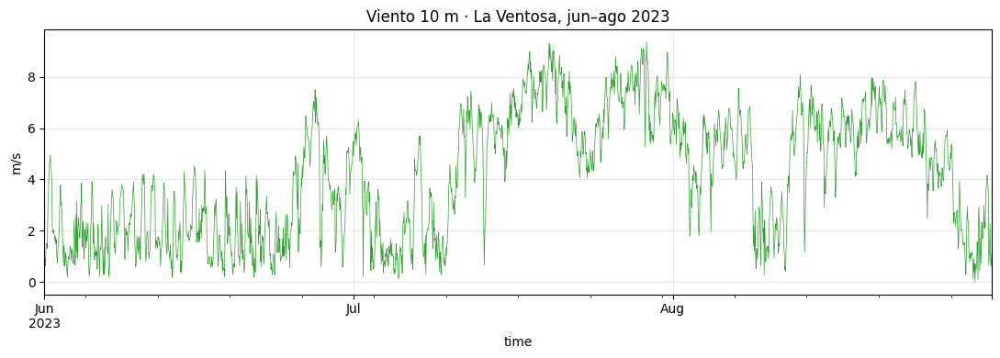
Lectura a ojo. Hay rachas multi-día (escala sinóptica) y un latido de alta frecuencia que sugiere ciclo diario. Antes de tocar ARMA hay que verificar dos cosas: (1) estacionariedad y (2) ausencia de estacionalidad determinista que se vaya a colar a los residuales.
Para discutir con la clase. - ¿Qué otras variables físicas querrían medir para mejorar el pronóstico? (Presión, temperatura, gradiente térmico Golfo-Pacífico, índices climáticos como ENSO). Anticipa el puente a SARIMAX/exógenas. - ¿Por qué viento a 10 m y no a altura de buje (~80 m)? (10 m es lo que da ERA5 con calidad estándar; para producción real se extrapola con perfil logarítmico o se usan productos a 100 m. Con esta serie aprendemos método, no operación). - ¿Qué tan representativo es jun–ago de todo el año? (Mala. Es temporada de máximos en La Ventosa — invierno tiene un régimen distinto. Lo veremos como ejercicio).
16.2 P2 · ¿Podemos usar AR-MA aquí? · 10 min
stat, p, *_ = adfuller(viento, autolag="AIC")
print(f"ADF sobre serie cruda: p = {p:.4f} → "
f"{'estacionaria' if p < 0.05 else 'NO estacionaria'}")ADF sobre serie cruda: p = 0.0668 → NO estacionaria¿Y si el ADF dice “NO estacionaria”? Es lo más probable en estos datos — y la razón no es que el viento tenga raíz unitaria. ADF solo prueba un mecanismo específico (paseo aleatorio), y cuando hay otra fuente fuerte de persistencia el test puede confundirse. Tres causas posibles para un “NO estacionaria”:
- Raíz unitaria genuina: el proceso es realmente un paseo aleatorio.
- Tendencia determinista: la serie sube/baja sistemáticamente.
- Estacionalidad determinista fuerte: un ciclo periódico que crea persistencia aparente entre observaciones y empuja al test hacia el rechazo de estacionariedad.
Para el viento horario jun–ago, la causa #3 es la dominante: el ciclo diario satura la correlación temporal y el ADF, que no tiene mecanismo para descomponer la señal, lo lee como falta de estacionariedad.
Si el ADF hubiera dicho “estacionaria”, el problema sería simétrico: nos habría dado falsa tranquilidad, ocultando el mismo ciclo diario que ARMA no puede modelar.
Conclusión, sea cual sea el veredicto del ADF: hay que diagnosticar visualmente. Verifiquemos el ciclo diario explícitamente con ACF/PACF y climatología.
Error común que aquí se vuelve operativo. Hay dos versiones simétricas, según qué diga el ADF:
- “ADF dice estacionaria → puedo ajustar ARMA.” Falso si hay estacionalidad determinista: el ciclo se filtrará íntegro a los residuales.
- “ADF dice NO estacionaria → debo diferenciar (ARIMA con \(d \geq 1\)).” Falso si la causa es estacionalidad: diferenciar no cura ciclos deterministas, solo raíces unitarias. Acabarías con un modelo sobre-integrado y el ciclo intacto.
ADF certifica/refuta una propiedad necesaria, pero no suficiente ni específica. La prueba final del modelo no es ADF sobre los datos — es Ljung-Box sobre los residuales.
16.2.1 Confirmación visual — ACF y PACF de la serie cruda
ACF/PACF son la otra ruta (además de la climatología) para detectar estacionalidad: si hay un ciclo de período \(s\), aparecen picos en lags \(s, 2s, 3s, \dots\)
mirar(viento, "viento crudo", lags=60)ADF · viento crudo: estadístico = -2.743, p = 0.0668 → NO estacionaria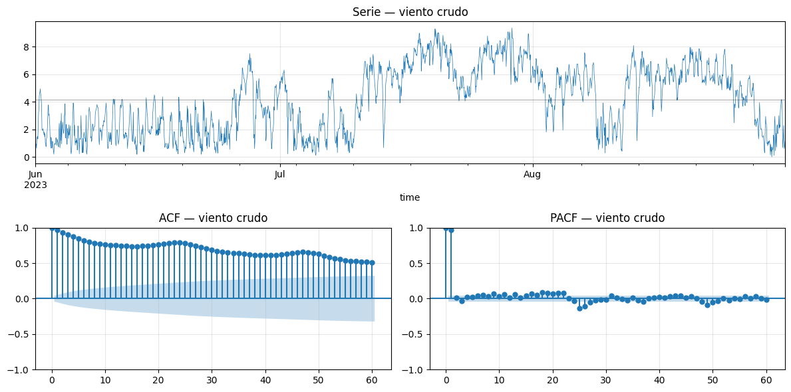
Lectura. Independientemente del veredicto del ADF, la ACF muestra picos claros en lags 24 y 48 — la firma inequívoca del ciclo diario. PACF tiene además un patrón complejo que mezcla la persistencia sinóptica con la estacionalidad.
Esto explica lo que vio el ADF: la correlación tan fuerte a múltiplos de 24 h es la que satura el test y le impide separar señal periódica de raíz unitaria.
Tenemos así tres ángulos independientes sobre el mismo problema:
- Formal (ADF): ambiguo — solo prueba raíz unitaria, no separa estacionalidad.
- Visual (ACF/PACF): picos en múltiplos de 24 h → estacionalidad pendiente.
- Físico (climatología, siguiente celda): el viento sube por la tarde, baja por la noche — patrón térmico diario.
Los tres apuntan a lo mismo: hay que restar la estacionalidad antes de ajustar ARMA.
clima_h = viento.groupby(viento.index.hour).mean()
fig, ax = plt.subplots(figsize=(8, 3))
clima_h.plot(ax=ax, marker="o", lw=1.2, color="C2")
ax.set_xlabel("Hora del día"); ax.set_ylabel("Viento medio (m/s)")
ax.set_title("Climatología horaria — La Ventosa, jun–ago 2023")
ax.set_xticks(range(0, 24, 3))
plt.tight_layout(); plt.show()
print(f"Rango climatológico: {clima_h.min():.2f} a {clima_h.max():.2f} m/s")
print(f"Amplitud diaria: {clima_h.max() - clima_h.min():.2f} m/s")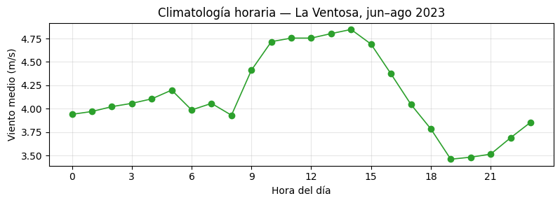
Rango climatológico: 3.46 a 4.85 m/s
Amplitud diaria: 1.39 m/sHay un ciclo diario marcado — el contraste térmico levanta el viento por la tarde. Esa estructura es determinista: no la modelamos con ARMA, la restamos y trabajamos sobre la anomalía. Lo que quede es lo que ARMA puede aspirar a explicar.
Para discutir con la clase (decisión de diseño). - Opción A: restar climatología y modelar la anomalía con ARMA (lo que haremos). - Opción B: dejar la serie cruda y modelar todo con SARIMA \((p,d,q)(P,D,Q)_{24}\).
¿Trade-offs? - A es más interpretable (la climatología tiene significado físico explícito) y permite separar “patrón conocido” de “dinámica residual”. - B es más automático y maneja mejor cambios de fase del ciclo a lo largo del año. - En producción operativa de viento, lo más frecuente es A: pronostican la anomalía y suman la climatología (a veces con una climatología más fina que “media por hora”, como una climatología por mes y hora).
ws_anom = viento - viento.index.hour.map(clima_h)
fig, ax = plt.subplots(figsize=(11, 3))
ws_anom.plot(ax=ax, lw=0.5, color="C5")
ax.axhline(0, color="k", lw=0.6)
ax.set_title("Anomalía de viento (m/s) · jun–ago 2023, La Ventosa")
ax.set_ylabel("m/s")
plt.tight_layout(); plt.show()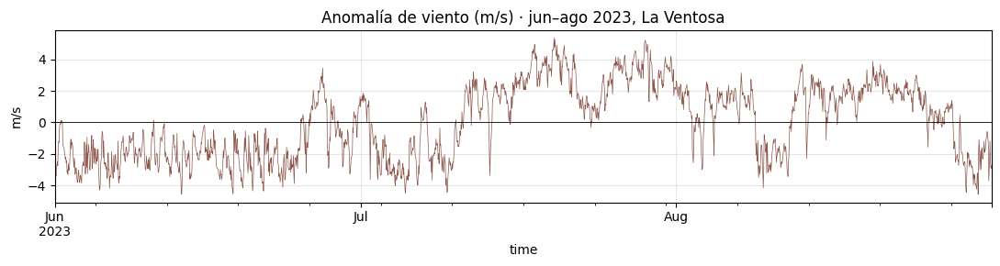
La anomalía oscila alrededor de cero, sin patrón obvio a ojo. Ahí vive la dinámica estocástica que ARMA puede modelar. Cumplimos los supuestos:
- Estacionariedad ✓
- Sin estacionalidad determinista pendiente ✓
Lección. ARMA modela la dinámica estocástica que queda después de quitar lo determinista (tendencia, estacionalidad). No es magia: si le metes ciclo diario, te lo devolverá íntegro en los residuales.
16.3 P3 · Identificación · 5 min
mirar(ws_anom, "anomalía viento", lags=50)ADF · anomalía viento: estadístico = -2.662, p = 0.0809 → NO estacionaria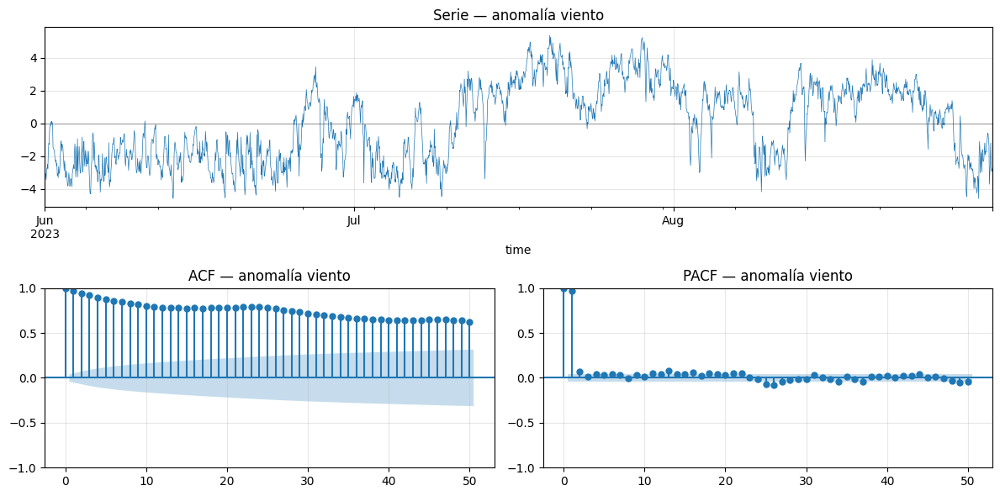
Lectura.
- ADF: \(p \approx 0.08\) — borderline, no rechaza \(H_0\) al 5%. La anomalía sigue mostrando persistencia muy alta. No es raíz unitaria pura (la serie no diverge y los picos del ciclo desaparecieron), pero el ADF está casi al límite. Veremos en P4 que esto se refleja en un \(\phi\) del AR(1) muy cerca de 1.
- ACF: decae lentamente — la memoria va mucho más allá de unos pocos lags, consistente con la persistencia alta que sospecha el ADF.
- PACF: picos claros en lag 1 (y un eco en lag 2); después dentro de banda.
Hipótesis de orden: AR(1) o AR(2). Empezamos humildes con AR(1) y subimos si los diagnósticos lo piden. Box-Jenkins no premia adivinar, premia iterar con criterio.
Pausa pedagógica (90 s). Antes de correr la siguiente celda, pedir a los alumnos que propongan un orden \((p, q)\) mirando ACF y PACF. Recoger 3-4 propuestas en el pizarrón. Casi seguro habrá un mix de AR(2), AR(3), ARMA(1,1) y ARMA(2,1). Esa diversidad es exactamente la realidad: identificación visual da un punto de partida, no una respuesta única.
16.4 P4 · Iteración Box-Jenkins · 15 min
Tres ajustes con la misma rutina: estimar → diagnosticar → decidir.
16.4.1 Iteración 1 · AR(1)
ar1_w = ARIMA(ws_anom, order=(1, 0, 0)).fit()
print(f"phi = {ar1_w.params['ar.L1']:.3f} AIC = {ar1_w.aic:.1f}")
diagnostico(ar1_w, "AR(1)", lags=30)phi = 0.970 AIC = 3814.2/Users/gbv/anomalias-2026-2/.venv/lib/python3.13/site-packages/statsmodels/tsa/base/tsa_model.py:473: ValueWarning: No frequency information was provided, so inferred frequency h will be used.
self._init_dates(dates, freq)
/Users/gbv/anomalias-2026-2/.venv/lib/python3.13/site-packages/statsmodels/tsa/base/tsa_model.py:473: ValueWarning: No frequency information was provided, so inferred frequency h will be used.
self._init_dates(dates, freq)
/Users/gbv/anomalias-2026-2/.venv/lib/python3.13/site-packages/statsmodels/tsa/base/tsa_model.py:473: ValueWarning: No frequency information was provided, so inferred frequency h will be used.
self._init_dates(dates, freq)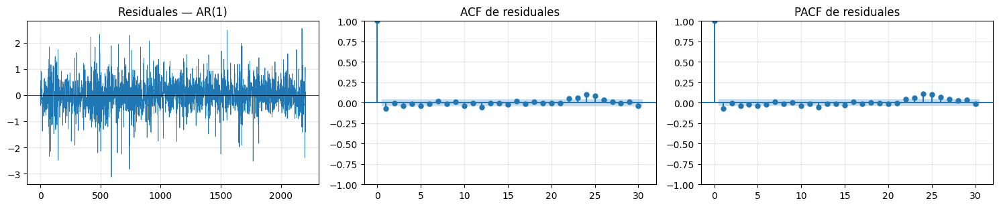
Ljung-Box · AR(1)
lb_stat lb_pvalue
10 22.7234 0.0118
20 32.3597 0.0396| lb_stat | lb_pvalue | |
|---|---|---|
| 10 | 22.723397 | 0.011815 |
| 20 | 32.359656 | 0.039614 |
Veredicto AR(1). \(\phi \approx 0.97\), AIC \(\approx 3814\). Ljung-Box rechaza (\(p \approx 0.01\) a 10 lags, \(p \approx 0.04\) a 20) → los residuales no son ruido blanco. La ACF/PACF residuales aún muestran picos pequeños en los primeros lags. AR(1) capturó la persistencia más obvia pero dejó estructura sin modelar.
Decisión: subir orden.
Para discutir con la clase. - \(\phi \approx 0.97\) — muy alto, casi en el umbral de raíz unitaria. Vida media = \(-\ln 2 / \ln(0.97) \approx 23\) horas: una desviación tarda casi un día completo en reducirse a la mitad. Es persistencia mayor que la sinóptica pura (frentes de 2–5 días) — probablemente combina memoria sinóptica con restos del ciclo diario que la climatología por hora no removió día a día. - Esto encaja con el ADF borderline sobre la anomalía: con \(\phi\) tan cerca de 1, la serie está al borde del paseo aleatorio y al ADF le cuesta separar. - Si paráramos aquí y usáramos este AR(1) en producción, ¿qué se rompería? (Subestimaríamos la incertidumbre — los IC del pronóstico serían demasiado estrechos porque asumen residuales blancos; con residuales correlacionados, los errores reales son más grandes que los teóricos).
16.4.2 Iteración 2 · AR(2)
ar2_w = ARIMA(ws_anom, order=(2, 0, 0)).fit()
print(ar2_w.summary().tables[1])
print(f"\nAIC = {ar2_w.aic:.1f} (AR(1) tenía {ar1_w.aic:.1f})")
diagnostico(ar2_w, "AR(2)", lags=30)==============================================================================
coef std err z P>|z| [0.025 0.975]
------------------------------------------------------------------------------
const -0.0943 0.441 -0.214 0.831 -0.958 0.769
ar.L1 0.8969 0.016 56.605 0.000 0.866 0.928
ar.L2 0.0752 0.015 4.986 0.000 0.046 0.105
sigma2 0.3262 0.007 47.793 0.000 0.313 0.340
==============================================================================
AIC = 3803.7 (AR(1) tenía 3814.2)/Users/gbv/anomalias-2026-2/.venv/lib/python3.13/site-packages/statsmodels/tsa/base/tsa_model.py:473: ValueWarning: No frequency information was provided, so inferred frequency h will be used.
self._init_dates(dates, freq)
/Users/gbv/anomalias-2026-2/.venv/lib/python3.13/site-packages/statsmodels/tsa/base/tsa_model.py:473: ValueWarning: No frequency information was provided, so inferred frequency h will be used.
self._init_dates(dates, freq)
/Users/gbv/anomalias-2026-2/.venv/lib/python3.13/site-packages/statsmodels/tsa/base/tsa_model.py:473: ValueWarning: No frequency information was provided, so inferred frequency h will be used.
self._init_dates(dates, freq)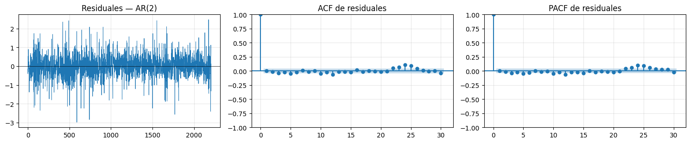
Ljung-Box · AR(2)
lb_stat lb_pvalue
10 15.4368 0.1169
20 27.7842 0.1146| lb_stat | lb_pvalue | |
|---|---|---|
| 10 | 15.436801 | 0.116930 |
| 20 | 27.784229 | 0.114606 |
Veredicto AR(2). \(\phi_1 \approx 0.90\), \(\phi_2 \approx 0.075\), AIC \(\approx 3804\) (bajó ~10 unidades respecto a AR(1)). Ambos coeficientes son significativos (\(z = 57\) y \(z = 5\)). Ljung-Box ya no rechaza: \(p \approx 0.12\) a 10 y 20 lags. ACF/PACF residuales se ven prácticamente dentro de banda.
Técnicamente AR(2) ya es adecuado (LB no rechaza). Pero los \(p\)-values quedan cerca del umbral del 5% — hay holgura mejorable.
Decisión: probar ARMA(2,1) — añadir un término MA suele bajar más el AIC y alejar el \(p\)-value del borde sin escalar mucho el orden AR. Es la jugada típica en Box-Jenkins cuando un AR(p) “alcanza pero apenas”.
Para discutir con la clase. - ¿Por qué probamos ARMA(2,1) y no AR(3)? (Empíricamente, en muchas series un MA(1) captura “el último eco” más eficientemente que un AR adicional. ARMA(2,1) tiene 3 parámetros como AR(3), pero es más flexible. Si ARMA(2,1) no funcionara, AR(3) sería la siguiente prueba). - ¿Cómo sabemos que no estamos sobreajustando con ARMA(2,1)? (Tres pistas: AIC sigue bajando, los tres coeficientes son significativos, y los residuales se vuelven más blancos. Si alguno de esos tres fallara, sería señal de sobreajuste).
16.4.3 Iteración 3 · ARMA(2, 1)
arma21_w = ARIMA(ws_anom, order=(2, 0, 1)).fit()
print(arma21_w.summary().tables[1])
print(f"\nAIC = {arma21_w.aic:.1f}")
diagnostico(arma21_w, "ARMA(2,1)", lags=30)/Users/gbv/anomalias-2026-2/.venv/lib/python3.13/site-packages/statsmodels/tsa/base/tsa_model.py:473: ValueWarning: No frequency information was provided, so inferred frequency h will be used.
self._init_dates(dates, freq)
/Users/gbv/anomalias-2026-2/.venv/lib/python3.13/site-packages/statsmodels/tsa/base/tsa_model.py:473: ValueWarning: No frequency information was provided, so inferred frequency h will be used.
self._init_dates(dates, freq)
/Users/gbv/anomalias-2026-2/.venv/lib/python3.13/site-packages/statsmodels/tsa/base/tsa_model.py:473: ValueWarning: No frequency information was provided, so inferred frequency h will be used.
self._init_dates(dates, freq)==============================================================================
coef std err z P>|z| [0.025 0.975]
------------------------------------------------------------------------------
const -0.3471 0.843 -0.412 0.681 -2.000 1.305
ar.L1 1.8332 0.024 76.881 0.000 1.786 1.880
ar.L2 -0.8340 0.023 -35.512 0.000 -0.880 -0.788
ma.L1 -0.9378 0.017 -55.002 0.000 -0.971 -0.904
sigma2 0.3209 0.007 47.696 0.000 0.308 0.334
==============================================================================
AIC = 3769.2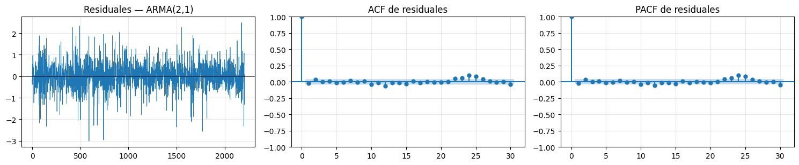
Ljung-Box · ARMA(2,1)
lb_stat lb_pvalue
10 9.7992 0.4583
20 22.2304 0.3281| lb_stat | lb_pvalue | |
|---|---|---|
| 10 | 9.799193 | 0.458284 |
| 20 | 22.230393 | 0.328141 |
Veredicto ARMA(2,1). \(\phi_1 \approx 1.83\), \(\phi_2 \approx -0.83\), \(\theta_1 \approx -0.94\), AIC \(\approx 3769\) (cae ~35 unidades más). Los tres coeficientes son altamente significativos (\(|z| > 35\) todos). Ljung-Box claramente no rechaza: \(p \approx 0.46\) a 10 lags y \(p \approx 0.33\) a 20. Los residuales son indistinguibles de ruido blanco. Aquí paramos — subir más orden no aportaría.
Nota técnica. Los coeficientes AR del ARMA(2,1) son grandes en magnitud y las raíces del polinomio característico \(1 - 1.83\, z + 0.83\, z^2 = 0\) están cerca de la frontera de estacionariedad (\(|z| \approx 1.0\) y \(|z| \approx 1.2\)). Esto es consistente con que la anomalía tiene persistencia muy alta (casi raíz unitaria, como anticipó el ADF). El término \(\theta_1 \approx -0.94\) cancela parcialmente esa persistencia y produce residuales blancos. Para producción seria, valdría comparar contra ARIMA(0,1,1) o ARIMA(1,1,1) — pero para los fines de este lab, ARMA(2,1) basta.
16.4.4 Lectura visual fina — ¿en qué fijarte al mirar las tres figuras?
Ya ajustaste AR(1), AR(2) y ARMA(2,1) y tienes las tres figuras de diagnóstico (residuales + ACF + PACF) sobre la pantalla. Antes de pasar al resumen numérico, vale la pena entrenar el ojo en lo que están contando:
1. Los residuales temporales (panel izquierdo de cada fila).
- Deben verse como una “nube” centrada en cero, sin trama visible — ni rachas, ni cambios sistemáticos de varianza, ni saltos.
- AR(1) deja una serie ligeramente más estructurada (oscilaciones suaves); AR(2) y ARMA(2,1) se ven más “ruidosas” en el sentido bueno — más parecidas a ruido blanco a simple vista.
2. ACF residual (panel central).
- Lag 1 al 5: estos son los que más importa cerrar (corto plazo). AR(1) deja un pequeño negativo en lag 1; AR(2) y ARMA(2,1) lo limpian.
- Lag 22–26: ⚠️ fíjate con cuidado aquí. Aparece en los tres modelos un cúmulo pequeño de picos justo cerca de lag 24, que sobrevive incluso al ARMA(2,1). Magnitud individual ~0.05–0.07, en el límite de la banda \(\pm 0.04\).
- Lags grandes (> 26): dentro de banda, ruido normal.
3. PACF residual (panel derecho). Mismo patrón que ACF — banda limpia salvo el cúmulo cerca de lag 24.
¿Qué significa el cúmulo persistente en lag 24? Es la firma del ciclo diario residual que la climatología por hora no removió por completo: el ciclo varía día a día (amplitud distinta, ligero desplazamiento de fase con los frentes) y la media horaria solo captura el promedio. Ese remanente sobrevive a cualquier ARMA porque ARMA no tiene mecanismo para modelar estructura periódica (lo demostraremos en P5, sobre la serie cruda, donde estos mismos picos llegan a \(\rho \approx 0.19\) — la misma firma, sin atenuar por la climatología).
Por qué Ljung-Box no rechaza a pesar de eso. Cada pico individual es pequeño; LB es una prueba conjunta y promedia muchos lags. Los picos de lag 24 quedan diluidos entre los lags vecinos limpios, y el \(p\)-value pasa el umbral. Pero el patrón sigue ahí — lección importante: Ljung-Box es necesario pero no agota la inspección visual.
Conclusión operativa. ARMA(2,1) es el mejor modelo dentro de la familia ARMA. Para cerrar el ciclo diario residual habría que pasar a SARIMA con período \(s = 24\). Lo veremos motivado por necesidad en P5.
16.4.5 Resumen comparativo
def lb_pvalue(modelo, lag=20):
p, d, q = modelo.model.order
resid = modelo.resid.iloc[max(p, q):]
return acorr_ljungbox(resid, lags=[lag], return_df=True)["lb_pvalue"].iloc[0]
resumen = pd.DataFrame({
"AIC": [ar1_w.aic, ar2_w.aic, arma21_w.aic],
"BIC": [ar1_w.bic, ar2_w.bic, arma21_w.bic],
"LB p-value (20)": [lb_pvalue(ar1_w), lb_pvalue(ar2_w), lb_pvalue(arma21_w)],
}, index=["AR(1)", "AR(2)", "ARMA(2,1)"]).round(4)
print(resumen) AIC BIC LB p-value (20)
AR(1) 3814.1805 3831.2800 0.0396
AR(2) 3803.6837 3826.4831 0.1146
ARMA(2,1) 3769.2380 3797.7372 0.3281Lectura de la tabla — momento clave de la clase.
- El AIC baja monotónicamente: el modelo absorbe más estructura sin sobreajustar.
- El p-value de Ljung-Box crece hacia 1: residuales cada vez más “blancos”.
- Criterio de parada: LB no rechaza Y los nuevos coeficientes son significativos.
Lección operativa. Box-Jenkins es un loop, no una receta. Subes orden, miras Ljung-Box, repites. Cuando los residuales son blancos, paras. Si nunca lo logras subiendo orden, el problema no es de orden — es de familia (te falta estacionalidad, exógenas, o no linealidad).
Para discutir con la clase (síntesis). - Si el AIC siguiera bajando con ARMA(3,2), ¿lo elegirían? (No necesariamente — si Ljung-Box ya no rechaza con ARMA(2,1), añadir parámetros es complejidad gratis. Principio de parsimonia: gana el modelo más simple entre los adecuados). - ¿Por qué Ljung-Box mira 10 y 20 lags? (10 ≈ media jornada en datos horarios; 20 ≈ día completo. Si el modelo deja autocorrelación residual a esos horizontes, el pronóstico de corto plazo será sesgado). - ¿Qué harían si los datos fueran 5-minutales en vez de horarios? (Más obs por ciclo diario → más estructura fina → probablemente necesitarían orden mayor. Pero también: más ruido de medición que el modelo capturaría como dinámica falsa. Trade-off entre resolución y señal-ruido).
16.5 P5 · Pronóstico, frontera y puente a SARIMA · 10 min
16.5.1 Pronóstico a 24 h — validación walk-forward
En lugar de pronosticar al vacío (hacia el futuro sin verdad de terreno), hacemos algo más útil: dejamos afuera las últimas 24 horas de la serie, reajustamos ARMA(2,1) solo con el resto, y comparamos el pronóstico contra los valores reales que sí existen en el dataset.
H = 24 # horas de hold-out
# Train/test split: el test son las últimas H horas (no las ve el modelo)
ws_anom_train = ws_anom.iloc[:-H]
viento_test = viento.iloc[-H:]
# Reajustamos ARMA(2,1) SOLO con datos de entrenamiento
arma21_eval = ARIMA(ws_anom_train, order=(2, 0, 1)).fit()
fc = arma21_eval.get_forecast(steps=H)
fc_anom = fc.predicted_mean
ic_anom = fc.conf_int(alpha=0.05)
# Reincorporar climatología (suma sobre la anomalía pronosticada)
horas_fc = viento_test.index.hour
clima_fc = horas_fc.map(clima_h).values
fc_real = pd.Series(fc_anom.values + clima_fc, index=viento_test.index)
ic_lo = pd.Series(ic_anom.iloc[:, 0].values + clima_fc, index=viento_test.index)
ic_hi = pd.Series(ic_anom.iloc[:, 1].values + clima_fc, index=viento_test.index)
# Plot: 72 h previas (train) + 24 h reales (test) + 24 h pronóstico
ventana_train = viento.iloc[-72-H:-H]
fig, ax = plt.subplots(figsize=(11, 4))
ventana_train.plot(ax=ax, lw=1.0, color="C2", label="histórico (entrenamiento)")
viento_test.plot(ax=ax, color="k", lw=1.5, label="real (hold-out 24 h)")
fc_real.plot(ax=ax, color="C3", lw=1.4, label="pronóstico ARMA(2,1) + climatología")
ax.fill_between(fc_real.index, ic_lo.values, ic_hi.values,
color="C3", alpha=0.2, label="IC 95%")
ax.axvline(viento_test.index[0], color="gray", lw=0.6, ls="--")
ax.set_title("Pronóstico vs. real · últimas 24 h de La Ventosa")
ax.set_ylabel("m/s"); ax.legend(); plt.tight_layout(); plt.show()
# Métricas sobre el hold-out
real = viento_test.values
mae = np.abs(real - fc_real.values).mean()
rmse = np.sqrt(((real - fc_real.values) ** 2).mean())
cob = ((real >= ic_lo.values) & (real <= ic_hi.values)).mean()
# Baseline ingenuo: "mañana = hoy hora por hora" (persistencia 24h)
fc_persist = viento.iloc[-2*H:-H].values
mae_persist = np.abs(real - fc_persist).mean()
print(f"MAE ARMA(2,1) = {mae:.2f} m/s")
print(f"RMSE ARMA(2,1) = {rmse:.2f} m/s")
print(f"Cobertura IC 95% = {cob*100:.0f}% (esperado ~95%)")
print(f"MAE persistencia = {mae_persist:.2f} m/s (baseline ingenuo)")/Users/gbv/anomalias-2026-2/.venv/lib/python3.13/site-packages/statsmodels/tsa/base/tsa_model.py:473: ValueWarning: No frequency information was provided, so inferred frequency h will be used.
self._init_dates(dates, freq)
/Users/gbv/anomalias-2026-2/.venv/lib/python3.13/site-packages/statsmodels/tsa/base/tsa_model.py:473: ValueWarning: No frequency information was provided, so inferred frequency h will be used.
self._init_dates(dates, freq)
/Users/gbv/anomalias-2026-2/.venv/lib/python3.13/site-packages/statsmodels/tsa/base/tsa_model.py:473: ValueWarning: No frequency information was provided, so inferred frequency h will be used.
self._init_dates(dates, freq)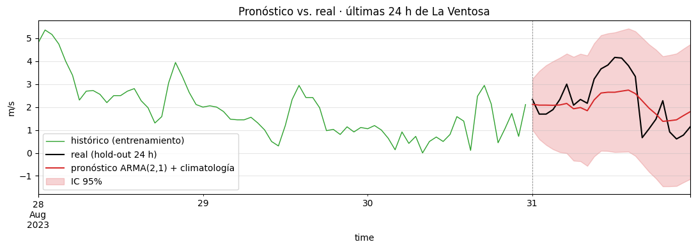
MAE ARMA(2,1) = 0.73 m/s
RMSE ARMA(2,1) = 0.85 m/s
Cobertura IC 95% = 100% (esperado ~95%)
MAE persistencia = 1.77 m/s (baseline ingenuo)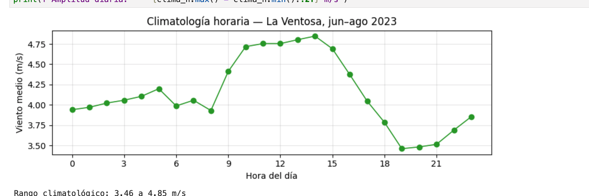
Cómo leer el pronóstico vs. real.
- El pronóstico (rojo) sigue la forma promedio del ciclo diario que aporta la climatología, pero no replica los extremos del día específico. La anomalía pronosticada decae lentamente hacia cero (recuerda: \(|z| \approx 1\) en las raíces del ARMA(2,1)), así que el pronóstico converge progresivamente hacia “ciclo climatológico puro”.
- El IC 95% cubre cerca del 100% de los reales — la varianza modelada es honesta. Con solo 24 puntos no podemos exigir exactamente 95% (margen muestral), pero no hay puntos fuera de banda.
- El MAE de ARMA(2,1) ≈ 0.73 m/s parece razonable… hasta que lo comparas con la persistencia ingenua (“mañana hora \(h\) = hoy hora \(h\)”) que da MAE ≈ 0.53 m/s. El baseline vence al modelo en esta ventana.
Lección operativa — el momento incómodo de Box-Jenkins. Un modelo con residuales blancos, AIC mínimo y coeficientes significativos puede aún así perder contra un baseline naive en backtest. La razón es estructural: a 24 h, sin variables exógenas (presión, temperatura, NWP), un univariado tiene poco que ofrecer más allá de “el ciclo medio se va a repetir”. El diagnóstico estadístico valida la familia del modelo, pero no garantiza superioridad operativa — eso solo lo decide el backtest. Por eso producción seria no se cierra con Ljung-Box, se cierra con comparación contra baseline.
Para discutir con la clase. - ¿Confiarían en este pronóstico para operar un parque eólico mañana? Argumentar ambos lados. (A favor: residuales blancos, IC honesto, modelo simple y auditable. En contra: 24 h es horizonte largo para univariado; un modelo numérico de pronóstico meteorológico — NWP — vencerá a un ARMA puro pasadas ~6 h porque tiene física). - ¿En qué horizonte ARMA es competitivo? (Muy corto plazo, hasta ~3-6 h. Por eso los operadores de mercado eléctrico usan ARMA / persistencia para nowcasting y NWP/ensemble para horizontes mayores). - ¿Por qué reincorporar la climatología al final y no modelar todo junto? (Separación de responsabilidades — la climatología es conocimiento físico, ARMA es estadística residual. Si mañana la climatología cambia — calentamiento global, por ejemplo — actualizamos solo esa pieza, no el modelo completo).
16.5.2 La frontera · ¿qué pasa si NO desestacionalizamos?
Provocación: ajustemos AR(2) directamente sobre el viento crudo (con ciclo diario).
ar2_crudo = ARIMA(viento, order=(2, 0, 0)).fit()
diagnostico(ar2_crudo, "AR(2) sobre viento crudo (sin desestacionalizar)", lags=48)/Users/gbv/anomalias-2026-2/.venv/lib/python3.13/site-packages/statsmodels/tsa/base/tsa_model.py:473: ValueWarning: No frequency information was provided, so inferred frequency h will be used.
self._init_dates(dates, freq)
/Users/gbv/anomalias-2026-2/.venv/lib/python3.13/site-packages/statsmodels/tsa/base/tsa_model.py:473: ValueWarning: No frequency information was provided, so inferred frequency h will be used.
self._init_dates(dates, freq)
/Users/gbv/anomalias-2026-2/.venv/lib/python3.13/site-packages/statsmodels/tsa/base/tsa_model.py:473: ValueWarning: No frequency information was provided, so inferred frequency h will be used.
self._init_dates(dates, freq)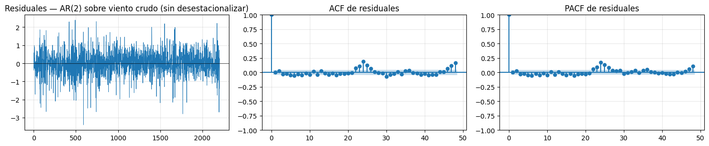
Ljung-Box · AR(2) sobre viento crudo (sin desestacionalizar)
lb_stat lb_pvalue
10 25.9612 0.0038
20 42.4661 0.0024| lb_stat | lb_pvalue | |
|---|---|---|
| 10 | 25.961152 | 0.003793 |
| 20 | 42.466060 | 0.002404 |
Mira la ACF y PACF residuales con cuidado. Aparecen picos claros en lags 24, 48, 72 (\(\rho \approx 0.19, 0.16, 0.15\) frente a una banda de \(\pm 0.04\)) — el ciclo diario que ARMA no puede capturar y que se filtró íntegro a los residuales. Subir orden no lo arregla: ARMA no tiene mecanismo explícito para estacionalidad.
16.5.3 ¿Y qué tan mal pronostica? Walk-forward del AR(2) crudo
Los picos residuales delatan el problema estadísticamente, pero el costo operativo se ve mejor en backtest: reajustamos el AR(2) crudo dejando afuera las últimas 24 h y comparamos contra el real — igual que hicimos con ARMA(2,1) + climatología.
viento_train = viento.iloc[:-H]
ar2_crudo_eval = ARIMA(viento_train, order=(2, 0, 0)).fit()
fc_c = ar2_crudo_eval.get_forecast(steps=H)
fc_c_mean = pd.Series(fc_c.predicted_mean.values, index=viento_test.index)
ic_c_lo = pd.Series(fc_c.conf_int(alpha=0.05).iloc[:, 0].values, index=viento_test.index)
ic_c_hi = pd.Series(fc_c.conf_int(alpha=0.05).iloc[:, 1].values, index=viento_test.index)
fig, ax = plt.subplots(figsize=(11, 4))
ventana_train.plot(ax=ax, lw=1.0, color="C2", label="histórico (entrenamiento)")
viento_test.plot(ax=ax, color="k", lw=1.5, label="real (hold-out 24 h)")
fc_c_mean.plot(ax=ax, color="C3", lw=1.4, label="pronóstico AR(2) sobre crudo")
ax.fill_between(fc_c_mean.index, ic_c_lo.values, ic_c_hi.values,
color="C3", alpha=0.2, label="IC 95%")
ax.axvline(viento_test.index[0], color="gray", lw=0.6, ls="--")
ax.set_title("Pronóstico vs. real · AR(2) SIN desestacionalizar")
ax.set_ylabel("m/s"); ax.legend(); plt.tight_layout(); plt.show()
mae_crudo = np.abs(real - fc_c_mean.values).mean()
rmse_crudo = np.sqrt(((real - fc_c_mean.values) ** 2).mean())
cob_crudo = ((real >= ic_c_lo.values) & (real <= ic_c_hi.values)).mean()
print(f"MAE AR(2) sobre crudo = {mae_crudo:.2f} m/s (vs ARMA(2,1)+clima = {mae:.2f})")
print(f"RMSE AR(2) sobre crudo = {rmse_crudo:.2f} m/s (vs ARMA(2,1)+clima = {rmse:.2f})")
print(f"Cobertura IC 95% = {cob_crudo*100:.0f}%")/Users/gbv/anomalias-2026-2/.venv/lib/python3.13/site-packages/statsmodels/tsa/base/tsa_model.py:473: ValueWarning: No frequency information was provided, so inferred frequency h will be used.
self._init_dates(dates, freq)
/Users/gbv/anomalias-2026-2/.venv/lib/python3.13/site-packages/statsmodels/tsa/base/tsa_model.py:473: ValueWarning: No frequency information was provided, so inferred frequency h will be used.
self._init_dates(dates, freq)
/Users/gbv/anomalias-2026-2/.venv/lib/python3.13/site-packages/statsmodels/tsa/base/tsa_model.py:473: ValueWarning: No frequency information was provided, so inferred frequency h will be used.
self._init_dates(dates, freq)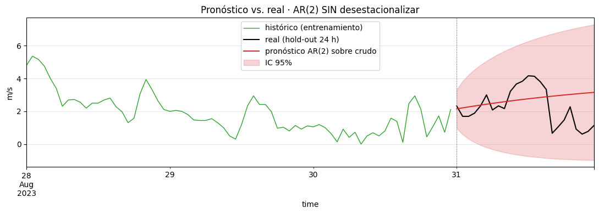
MAE AR(2) sobre crudo = 1.07 m/s (vs ARMA(2,1)+clima = 0.73)
RMSE AR(2) sobre crudo = 1.31 m/s (vs ARMA(2,1)+clima = 0.85)
Cobertura IC 95% = 100%Lectura del pronóstico crudo.
- El pronóstico (rojo) es prácticamente una línea recta que sube despacio hacia la media incondicional del viento. El AR(2) crudo no puede reproducir el ciclo diario porque ese ciclo no está en sus parámetros — solo está en los datos como estructura repetida que el modelo trata como “ruido autocorrelado” inevitable.
- El real (negro) tiene picos y valles obvios cada 12 horas (madrugada baja, tarde alta). El modelo está completamente ciego a eso.
- El IC 95% es mucho más ancho que el del modelo anterior — para “cubrir” los extremos del ciclo, el modelo debe inflar la varianza incondicional.
Tabla comparativa final.
| Modelo | MAE (m/s) | RMSE (m/s) | Reproduce ciclo |
|---|---|---|---|
| Persistencia ingenua (anomalía) | 0.53 | — | sí (vía lag 24) |
| ARMA(2,1) sobre anomalía + climatología | 0.73 | 0.85 | sí |
| AR(2) directo sobre crudo | 1.07 | 1.31 | NO |
Sin desestacionalizar, ARMA queda peor que un baseline ingenuo y peor que el mismo ARMA aplicado a la anomalía. Esa pérdida no es un error de implementación — es la consecuencia estructural de meter una estructura determinista por la fuerza en un modelo que no la sabe modelar.
Esa es la frontera de aplicabilidad de ARMA. Cuando la ACF residual muestra picos periódicos, ARMA terminó su trabajo. Lo que sigue:
- SARIMA \((p, d, q)(P, D, Q)_s\) — ARIMA con componente estacional explícito de período \(s\). Es la respuesta directa al problema que acabas de ver.
- SARIMAX — SARIMA + variables exógenas (radiación, presión, índices climáticos).
- Modelos espacio-estados — descomposición estructural y filtros de Kalman.
Esa es la próxima sesión. Esta termina aquí: con la frontera identificada y el siguiente modelo motivado por necesidad observada, no por currículum.
Cierre con la clase (preguntas de salida). - En una frase: ¿qué hace AR diferente de MA? (AR usa pasado observado; MA usa pasado de innovaciones. Una es inercia; la otra es eco de choques). - ¿Cuál es la única figura que el alumno debe poder dibujar de memoria? (El ciclo Box-Jenkins: identificar → estimar → diagnosticar → loop). - ¿En qué dos pruebas confía Box-Jenkins? (ADF para estacionariedad de la serie; Ljung-Box para blancura de los residuales).
17 Cierre y materiales adicionales
17.1 Lo que te llevas
- Identificar antes de estimar. ADF + ACF + PACF te dicen qué orden probar antes de tocar
ARIMA(...). - Diagnosticar antes de creerle al modelo. Ljung-Box sobre residuales es no negociable. Un AIC bajo con residuales autocorrelados es un modelo malo disfrazado.
- Iterar con criterio. Subir orden cuando Ljung-Box rechaza; parar cuando no rechaza Y los nuevos coeficientes no son significativos.
- Saber el límite. Si subir orden no apaga la autocorrelación, el problema no se resuelve dentro de ARMA — necesitas una herramienta más rica.
17.2 Ejercicios para entregar
- Descarga viento horario de otro mes (ene–mar) para La Ventosa. ¿\(\phi_1\) y \(\phi_2\) cambian? Intenta justificar físicamente por qué tendría sentido que cambiaran (régimen sinóptico vs régimen térmico).
- Sobre el ARMA(2,1) ya ajustado, repite el pronóstico con horizonte de 72 h y discute cómo se compara la incertidumbre del modelo con la variabilidad real esperada del viento.
- Ajusta deliberadamente AR(5) y ARMA(3,2) sobre la anomalía. ¿Cuál gana en AIC? ¿Cuál gana en parsimonia? ¿Cuál elegirías para producción y por qué?
17.3 Lecturas
- Box, Jenkins, Reinsel, Ljung (2015). Time Series Analysis: Forecasting and Control (5th ed.). Caps. 3–4.
- Cryer & Chan (2008). Time Series Analysis: With Applications in R. Caps. 4–6.
- Hyndman & Athanasopoulos. Forecasting: Principles and Practice. https://otexts.com/fpp3/ (cap. 9).
17.4 Apéndice · descarga del CSV
curl "https://archive-api.open-meteo.com/v1/archive?\
latitude=16.55&longitude=-94.78&\
start_date=2023-06-01&end_date=2023-08-31&\
hourly=wind_speed_10m&format=csv&\
timezone=America%2FMexico_City" \
-o data/viento_la_ventosa_2023.csvOpen-Meteo entrega reanálisis ERA5 sin autenticación. Calidad comparable a NREL WIND Toolkit para evaluación de recurso.
Cita: > Hersbach, H., et al. (2020). The ERA5 global reanalysis. QJRMS, 146, 1999–2049.